pacman::p_load(sf,tidyverse,tmap,spdep,funModeling)In-class Exercise 2(Why Nigeria has so many broken waterpoints?)
Overview
Many water points in Nigeria are non-functional and it could be insightful to look into whether there are additional reasons that causes these non-functional water points and if there is any spatial correlations that could be unearthed.
Getting Started
We would be using R for this geospatial analysis and the R Packages used are :
sf : preprocessing and importing of geospatial data
tidyverse : facilitate the data science work flow
tmap : Used for visualisation of the various plots used in this analysis
spdep : Spatial weight analysis package
funModeling : Usef for statistical modelling and visualisation
Importing Geospatial Data
File used for this analysis:
geo_export [file containing information of water points in Nigeria]
geoBoundaries-NGA-ADM2 [contains geographical and boundary data for Nigeria under admin level 2]
Importing water point geospatial data
First of all we import the data and check if Geodetic CRS is same for both files
#command above make sure quarto does not execute
wp <- st_read(dsn = "geodata",
layer = "geo_export",
crs = 4326) %>%
filter(clean_coun == "Nigeria")in the code chunk below, write_rds() of readr package is used to save the extracted sf data table into an output file in rds data format.
wp_nga <- write_rds(wp,"geodata/wp_nga.rds")Next st_read is used to read the geoboundaries file, here we confirm that the second file’s Geodetic CRS is also WGS 84
nga <- st_read(dsn = "geodata",
layer = "geoboundaries-NGA-ADM2")Next, we reformat the NA values into string for easier processing
wp_nga <- read_rds("geodata/wp_nga.rds") %>%
mutate(status_cle=replace_na(status_cle,"Unknown"))Exploratory Data Analysis
Before we start with data wrangling, some data analysis shall be performed to see if we can get certain insights. From the chart below, we can see that almost 31% of the waterpoints are non-functional with 11% status that is unknown. To have 31% of the whole nation’s water point be non-functional is mind boggling and this definitely deserves a deep dive into why it is happening.
freq(data=wp_nga,
input = 'status_cle')in the code chunk below,filter function of dplyr is used to select functional water points
wpt_functional <- wp_nga %>%
filter(status_cle %in%
c("Functional",
"Functional but not in use",
"Functional but needs repair"))Below is the frequency statistics for the functional water points:
freq(data = wpt_functional,
input = "status_cle")Below is the frequency statistics for the non-functional water points:
wpt_nonfunctional <- wp_nga %>%
filter(status_cle %in%
c("Abandoned/Decommissioned",
"Abandoned",
"Non-Functional",
"Non functional due to dry season",
"Non-Functional due to dry season"))freq(data=wpt_nonfunctional,
input = 'status_cle')We also filter the status unknown waterpoints into one set for further visualisation later
wpt_unknown <- wp_nga %>%
filter(status_cle=="Unknown")Next we look deeper into the types of water points available:
freq(data=wpt_functional,
input = 'water_te_2')From the chart below and the one above, we can see that Hand Pump and Mechanized Pump are the only two more significant types of pumps used with hand pumps about 2/3 of entire population probably due to technological or logitistical constraints. As there is a higher percentage of functional hand pump water points than non-functional hand pump water points, it could be worth while to include it in this analysis.
freq(data=wpt_nonfunctional,
input = 'water_te_2')A look at the water source finds that borehole takes up most of the population so we would not look further into this
freq(data=wpt_nonfunctional,
input = 'water_sour')Next, we filter the hand pump and mechanised pump non-functional water points:
wpt_nonfunctionalhand <- wpt_nonfunctional %>%
filter(water_te_2 %in%
c("Hand Pump"))
wpt_nonfunctionalmech <- wpt_nonfunctional %>%
filter(water_te_2 %in%
c("Mechanized Pump"))Here some additional data wrangling is done to generate the numbers for each type of status for the water points in each area:
total: total number of water pointsfunctional: functional water points that could be in use or not in usenon-functional: non-functional water points that includes water points that are not in use due to dry seasonunknown: water points which we have no information about the status
In addition to that, 1 is add to ShapeName if duplicate is found in case there are two area names that are same but still has to be differentiated.
nga_wp <- nga %>%
mutate(`total wpt` = lengths(
st_intersects(nga, wp_nga))) %>%
mutate(`wpt functional` = lengths(
st_intersects(nga, wpt_functional))) %>%
mutate(`wpt non-functional` = lengths(
st_intersects(nga, wpt_nonfunctional))) %>%
mutate(`wpt unknown` = lengths(
st_intersects(nga, wpt_unknown))) %>%
mutate(`wpt non-functional` = replace_na(`wpt non-functional`, 0)) %>%
mutate(`wpt functional` = replace_na(`wpt functional`, 0)) %>%
mutate(`wpt non-functional hand pump` = lengths(
st_intersects(nga, wpt_nonfunctionalhand))) %>%
mutate(`wpt non-functional mech pump` = lengths(
st_intersects(nga, wpt_nonfunctionalmech))) %>%
mutate(shapeName = case_when(duplicated(shapeName) ~ str_c(shapeName, '1', sep = ''), TRUE ~ shapeName))Get Percentage of functional/non-functional against total
Next some additional wrangling is done to get ratio or the percentage of functional and non-functional water points against the total
nga_wp <- nga_wp %>%
mutate(pct_functional = case_when(
`wpt functional` == 0 ~ 0,
TRUE ~ `wpt functional`/`total wpt`
)) %>%
mutate(pct_nonfunctional = case_when(
`wpt non-functional` == 0 ~ 0,
TRUE ~ `wpt non-functional`/`total wpt`))We then write this into a rds file before deleting the source files as they are too large to commit to github
write_rds(nga_wp, "geodata/nga_wp.rds")Below is the rough distribution plots of each tally of water point:
totalfunctionalnon-functionalunknown
nga_wp <- read_rds("geodata/nga_wp.rds")
nga_wp26391 <- st_transform(nga_wp,
crs = 26391)
total <- tm_shape(nga_wp26391) +
tm_fill("total wpt",
n = 5,
style = "jenks") +
tm_borders(alpha = 0.5) +
tm_layout(main.title = "total",legend.height = 0.25, main.title.size = 0.8,
legend.width = 0.35)
wp_functional <- tm_shape(nga_wp26391) +
tm_fill("wpt functional",
n = 5,
style = "jenks") +
tm_borders(alpha = 0.5) +
tm_layout(main.title = "functional",legend.height = 0.25, main.title.size = 0.8,
legend.width = 0.35)
wp_nonfunctional <- tm_shape(nga_wp26391) +
tm_fill("wpt non-functional",
n = 5,
style = "jenks") +
tm_borders(alpha = 0.5) +
tm_layout(main.title = "non-functional",legend.height = 0.25, main.title.size = 0.8,
legend.width = 0.35)
unknown <- tm_shape(nga_wp26391) +
tm_fill("wpt unknown",
style = "jenks") +
tm_borders(alpha = 0.5) +
tm_layout(main.title = "Unknown",legend.height = 0.25, main.title.size = 0.8,
legend.width = 0.35)
tmap_arrange(total, wp_functional, wp_nonfunctional, unknown, asp=1, ncol=2)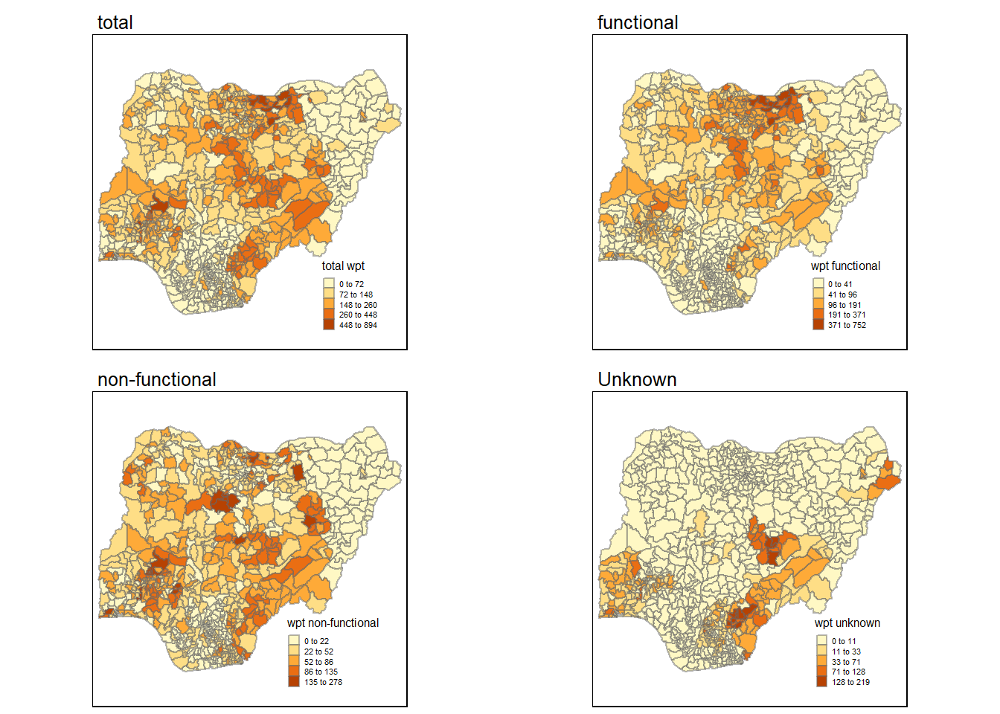
Analysis of non-functional water points
Functional water points(%) vs Non-functional water points(%)
First observation is that for functional water points, there are more areas with high percentage of functioning water points (out of all water points) in the northern region of the country. This is especially true for the central northern regions. On the other hand, southern regions is observed to higher concentrations of non-functional water points.
set.seed(8888)
wp_functional <- tm_shape(nga_wp26391) +
tm_fill("pct_functional",
n = 5,
style = "bclust") +
tm_borders(alpha = 0.5) +
tm_layout(main.title = "Ratio of functional water points",main.title.size = 1,legend.height = 0.25,
legend.width = 0.35)
wp_nonfunctional <- tm_shape(nga_wp26391) +
tm_fill("pct_nonfunctional",
n = 5,
style = "bclust") +
tm_borders(alpha = 0.5) +
tm_layout(main.title = "Ratio of non-functional water points",main.title.size =1,legend.height = 0.25,
legend.width = 0.35)
tmap_arrange(wp_functional, wp_nonfunctional, ncol=2)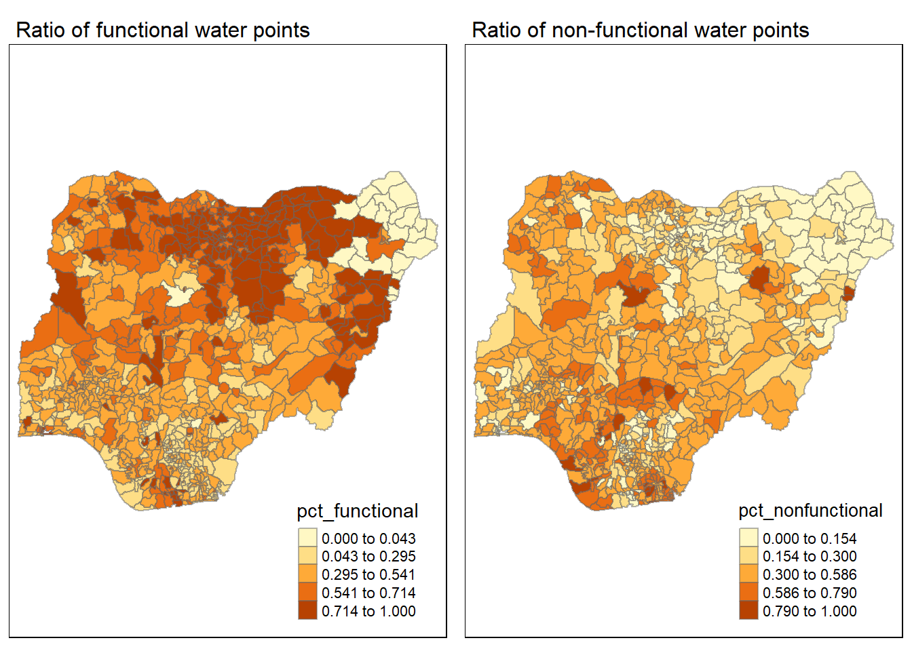
Committee Member: 1(1) 2(1) 3(1) 4(1) 5(1) 6(1) 7(1) 8(1) 9(1) 10(1)
Computing Hierarchical Clustering
Committee Member: 1(1) 2(1) 3(1) 4(1) 5(1) 6(1) 7(1) 8(1) 9(1) 10(1)
Computing Hierarchical ClusteringNon-functional Mechanical Pump Waterpoint vs Non functional Hand pump Waterpoint
At first glance, it seems that there are more non-functional mechanical pump waterpoints in the southern hemisphere of the country which correlates with the general non-functional waterpoint population. Meanwhile for non functional hand pump, it is not as concentrated but also has a few clusters where the number is quite high.
wp_functional <- tm_shape(nga_wp26391) +
tm_fill("wpt non-functional mech pump",
n = 5,
style = "fisher") +
tm_borders(alpha = 0.5) +
tm_layout(main.title = "non-functional mechanical pump",main.title.size =1,legend.height = 0.25,
legend.width = 0.35)
wp_nonfunctional <- tm_shape(nga_wp26391) +
tm_fill("wpt non-functional hand pump",
n = 5,
style = "fisher") +
tm_borders(alpha = 0.5) +
tm_layout(main.title = "non-functional hand pump",main.title.size =1,legend.height = 0.25,
legend.width = 0.35)
tmap_arrange(wp_functional, wp_nonfunctional, ncol=2)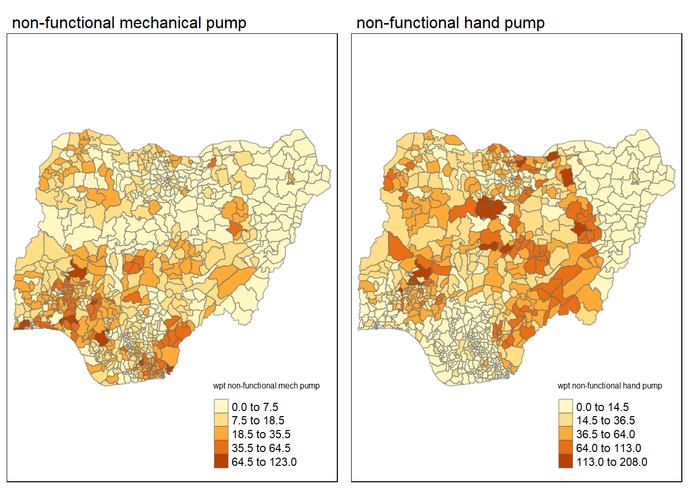
Next we take a look at the Queen contiguity based neighbours map
wm_q <- poly2nb(nga_wp, queen=TRUE)
summary(wm_q)Neighbour list object:
Number of regions: 774
Number of nonzero links: 4440
Percentage nonzero weights: 0.7411414
Average number of links: 5.736434
1 region with no links:
86
Link number distribution:
0 1 2 3 4 5 6 7 8 9 10 11 12 14
1 2 14 57 125 182 140 122 72 41 12 4 1 1
2 least connected regions:
138 560 with 1 link
1 most connected region:
508 with 14 linksTo get our longitude values we map the st_centroid function over the geometry column of us.bound and access the longitude value through double bracket notation [[]] and 1. This allows us to get only the longitude, which is the 1st value in each centroid and the latittude value which is the 2nd value
longitude <- map_dbl(nga_wp$geometry, ~st_centroid(.x)[[1]])
latitude <- map_dbl(nga_wp$geometry, ~st_centroid(.x)[[2]])Here the latitude and longitude coordinates are binded using cbind
coords <- cbind(longitude, latitude)plot(nga_wp$geometry, border="lightgrey")
plot(wm_q, coords, pch = 19, cex = 0.6, add = TRUE, col= "red")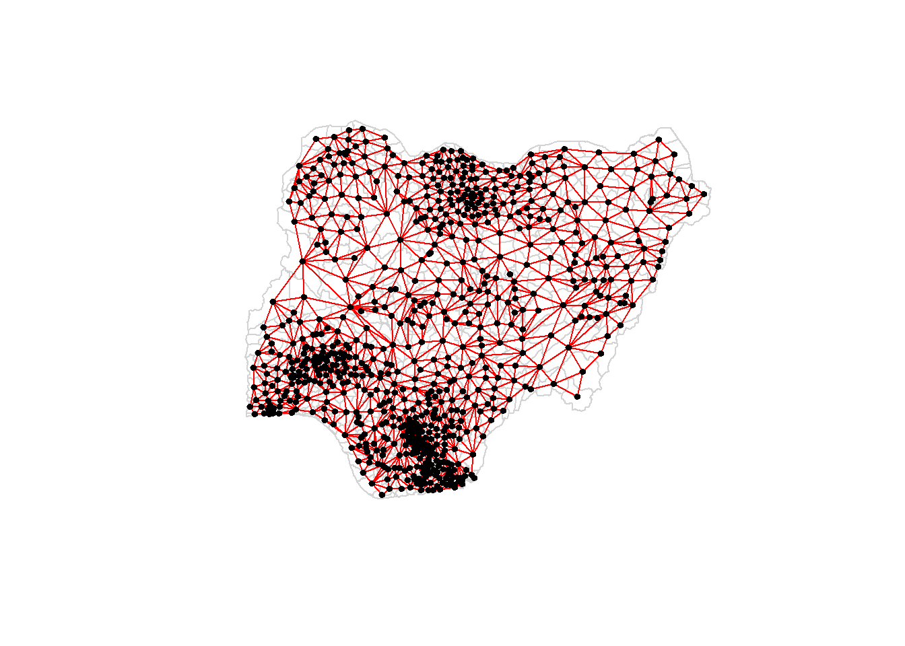
rswm_q <- nb2listw(wm_q, style="W", zero.policy = TRUE)
summary(rswm_q, zero.policy = TRUE)Characteristics of weights list object:
Neighbour list object:
Number of regions: 774
Number of nonzero links: 4440
Percentage nonzero weights: 0.7411414
Average number of links: 5.736434
1 region with no links:
86
Link number distribution:
0 1 2 3 4 5 6 7 8 9 10 11 12 14
1 2 14 57 125 182 140 122 72 41 12 4 1 1
2 least connected regions:
138 560 with 1 link
1 most connected region:
508 with 14 links
Weights style: W
Weights constants summary:
n nn S0 S1 S2
W 773 597529 773 285.0658 3198.414dist <- nbdists(wm_q, coords, longlat = TRUE)
ids <- lapply(dist, function(x) 1/(x))rswm_ids <- nb2listw(wm_q, glist=ids, style="B", zero.policy=TRUE)
summary(rswm_ids, zero.policy = TRUE)Characteristics of weights list object:
Neighbour list object:
Number of regions: 774
Number of nonzero links: 4440
Percentage nonzero weights: 0.7411414
Average number of links: 5.736434
1 region with no links:
86
Link number distribution:
0 1 2 3 4 5 6 7 8 9 10 11 12 14
1 2 14 57 125 182 140 122 72 41 12 4 1 1
2 least connected regions:
138 560 with 1 link
1 most connected region:
508 with 14 links
Weights style: B
Weights constants summary:
n nn S0 S1 S2
B 773 597529 182.3683 26.1191 252.344We then get the average neighbour value which is also known as spatial lag using the listw function
nga_wp.lag <- lag.listw(rswm_q, nga_wp$"pct_nonfunctional",zero.policy = TRUE)Next we append the spatial lag column onto our dataframe
lag.list <- list(nga_wp$shapeName, lag.listw(rswm_q, nga_wp$"pct_nonfunctional",zero.policy = TRUE))
lag.res <- as.data.frame(lag.list)
colnames(lag.res) <- c("shapeName", "lag Nonfunctional")
nga_wp<- left_join(nga_wp,lag.res)Spatial lag with row standardized weights
nonfunctional <- qtm(nga_wp, "pct_nonfunctional")
lag_nonfunctional <- qtm(nga_wp, "lag Nonfunctional")
tmap_arrange(nonfunctional, lag_nonfunctional, asp=1, ncol=2)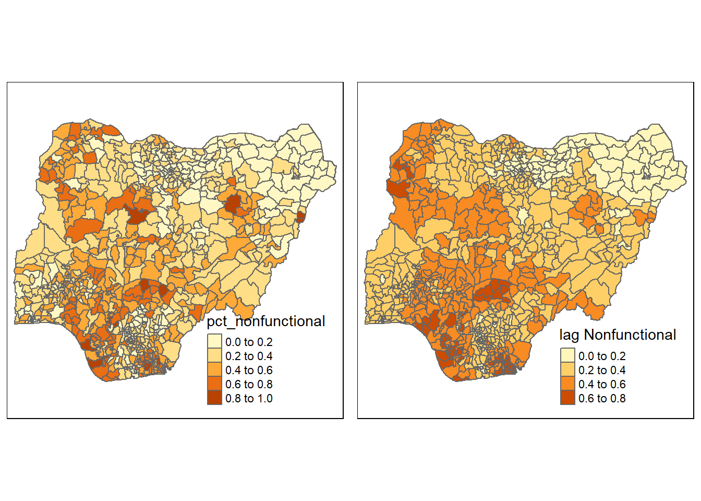
Moran’s I global auto correlation
Based on Moran’s I tests below, we can see that in general ,the null hypothesis that the non functional water points are randomly distributed is rejected. As Moran’s I is positive, we can say that there is positive auto-correlation and there is clustering between areas with similar values.
moran.test(nga_wp$"wpt non-functional",
listw=rswm_q,
zero.policy = TRUE,
na.action=na.omit)
Moran I test under randomisation
data: nga_wp$"wpt non-functional"
weights: rswm_q n reduced by no-neighbour observations
Moran I statistic standard deviate = 20.043, p-value < 2.2e-16
alternative hypothesis: greater
sample estimates:
Moran I statistic Expectation Variance
0.433932927 -0.001295337 0.000471516 The observation for nonfunctional waterpoint to total waterpoint ratio is the Moran’s I is around 0.04 high and p value is still very low therefore null hypothesis is also rejected
set.ZeroPolicyOption(TRUE)[1] FALSEmoran.test(nga_wp$"pct_nonfunctional",
listw=rswm_q,
zero.policy = TRUE,
na.action=na.omit)
Moran I test under randomisation
data: nga_wp$pct_nonfunctional
weights: rswm_q n reduced by no-neighbour observations
Moran I statistic standard deviate = 22.343, p-value < 2.2e-16
alternative hypothesis: greater
sample estimates:
Moran I statistic Expectation Variance
0.4850220148 -0.0012953368 0.0004737605 For next two Moran’s I test for hand pump and mechanical pump, we can see that both null hypothesis is also rejected with positive Moran’s I score which suggest clustering of similar values with the hand pump having a higher value.
moran.test(nga_wp$"wpt non-functional hand pump",
listw=rswm_q,
zero.policy = TRUE,
na.action=na.omit)
Moran I test under randomisation
data: nga_wp$"wpt non-functional hand pump"
weights: rswm_q n reduced by no-neighbour observations
Moran I statistic standard deviate = 22.972, p-value < 2.2e-16
alternative hypothesis: greater
sample estimates:
Moran I statistic Expectation Variance
0.4972328323 -0.0012953368 0.0004709725 moran.test(nga_wp$"wpt non-functional mech pump",
listw=rswm_q,
zero.policy = TRUE,
na.action=na.omit)
Moran I test under randomisation
data: nga_wp$"wpt non-functional mech pump"
weights: rswm_q n reduced by no-neighbour observations
Moran I statistic standard deviate = 21.153, p-value < 2.2e-16
alternative hypothesis: greater
sample estimates:
Moran I statistic Expectation Variance
0.4572511744 -0.0012953368 0.0004699257 bperm= moran.mc(nga_wp$"pct_nonfunctional",
listw=rswm_q,
nsim=999,
zero.policy = TRUE,
na.action=na.omit)
bperm
Monte-Carlo simulation of Moran I
data: nga_wp$pct_nonfunctional
weights: rswm_q
number of simulations + 1: 1000
statistic = 0.48502, observed rank = 1000, p-value = 0.001
alternative hypothesis: greaterhist(bperm$res,
freq=TRUE,
breaks=20,
xlab="Simulated Moran's I")
abline(v=0,
col="red") 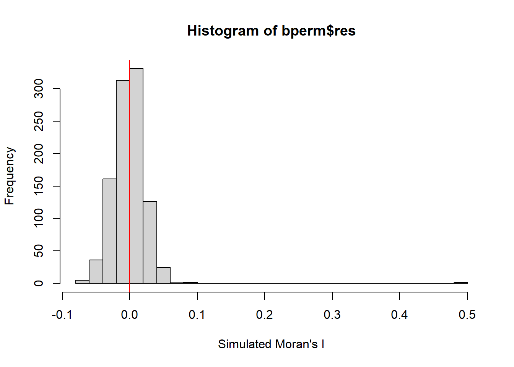
Moran’s I correlogram
In the correlogram below, the distribution of Moran’s I is rather significant at step 1 ranging from 0.4 to 0.5. the Moran’s I score is it is clear that with the increase in order or steps, the Moran’s I score decreases. This shows that there is some sort of spatial dependence and that the areas are more likely similar to neighbours at order 1 than neighbours at higher orders which makes sense geographically as resources could be shared if they are not too far off.
MI_corr_nf <- sp.correlogram(wm_q,nga_wp$"pct_nonfunctional" , order = 10, method = "I", style = "W")
plot(MI_corr_nf)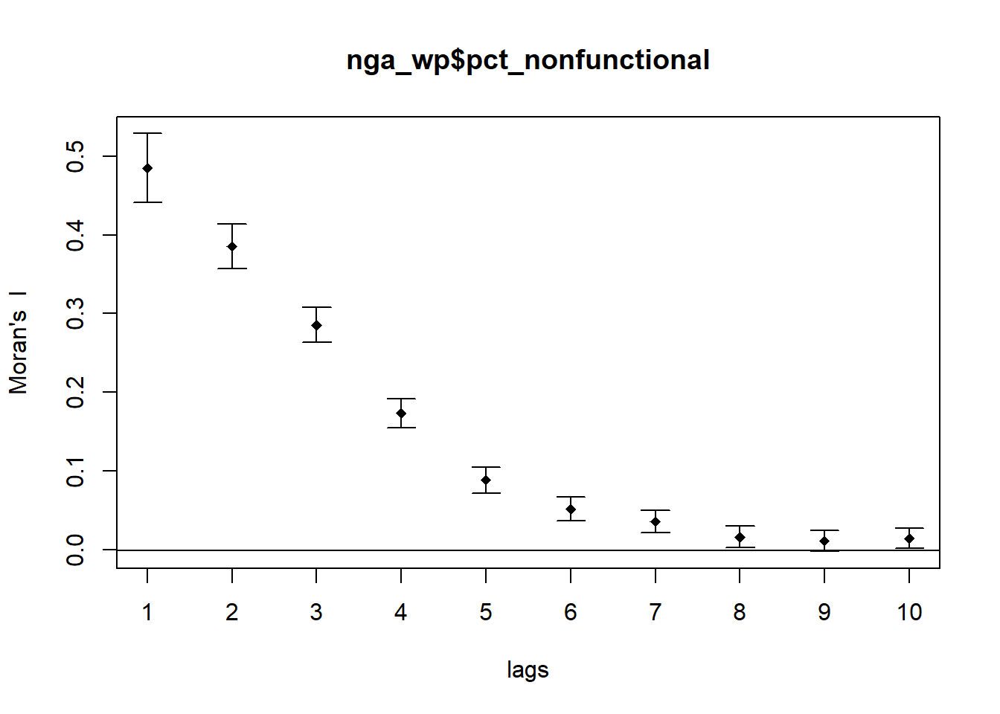
Geary’s C correlogram shows a similar phenomena, where spatial autocorrelation drops and goes to 1 and beyond as the order goes up
G_corr_nf <- sp.correlogram(wm_q,nga_wp$"pct_nonfunctional" , order = 10, method = "C", style = "W")
plot(G_corr_nf)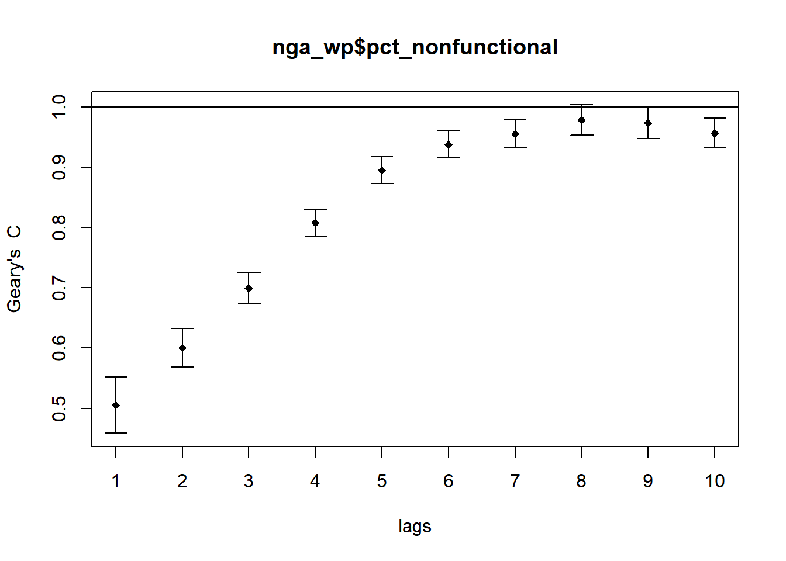
Further cluster and outlier analysis on non-functional waterpoints
Computing Local Moran’s I
fips <- order(nga_wp$shapeName)
localMI <- localmoran(nga_wp$"pct_nonfunctional", rswm_q)
head(localMI) Ii E.Ii Var.Ii Z.Ii Pr(z != E(Ii))
1 0.7104808 -0.0008481017 0.1633313 1.7600935 0.078391961
2 0.4787122 -0.0005236472 0.1346804 1.3058614 0.191599708
3 2.9220515 -0.0037801442 0.9690735 2.9721518 0.002957204
4 0.2666687 -0.0016485516 0.1805678 0.6314347 0.527756347
5 1.1001242 -0.0007647464 0.1176793 3.2091756 0.001331162
6 0.5273909 -0.0009383859 0.1028556 1.6473678 0.099482464nga_wp.localMI <- cbind(nga_wp,localMI) %>%
rename(Pr.Ii = Pr.z....E.Ii..)Mapping local Moran’s I
local_moran <- tm_shape(nga_wp.localMI) +
tm_fill(col = "Ii",
style = "pretty",
palette = "RdBu",
title = "local moran statistics") +
tm_borders(alpha = 0.5) +
tm_layout(main.title = "Local Moran's I score",legend.height = 0.25,
main.title.size = 0.8,legend.width = 0.35)
local_moran_pval <-tm_shape(nga_wp.localMI) +
tm_fill(col = "Pr.Ii",
breaks=c(-Inf, 0.001, 0.01, 0.05, 0.1, Inf),
palette="-Blues",
title = "local Moran's I p-values") +
tm_borders(alpha = 0.5) +
tm_layout(main.title = "Local Moran's I p-value",legend.height = 0.25,
main.title.size = 0.8,legend.width = 0.35)
tmap_arrange(local_moran, local_moran_pval, asp=1, ncol=2)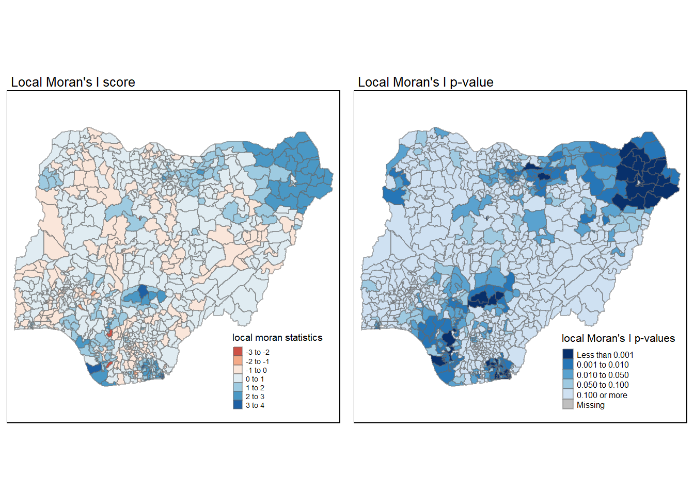
Moran Scatterplot with standardised variable
Usually the Moran scatterplot is generated before we move to the LISA map
nga_wp$Z.pct_nonfunctional <- scale(nga_wp$"pct_nonfunctional") %>%
as.vector This scatter plot shows the relationship between the ratio/percentage of nonfunctional waterpoints and the mean value of non functional waterpoints of its neighbouring areas
nci <- moran.plot(nga_wp$Z.pct_nonfunctional, rswm_q,
labels=as.character(nga_wp$shapeName),
xlab="ratio of nonfunctional waterpoints",
ylab="Spatially Lag ratio")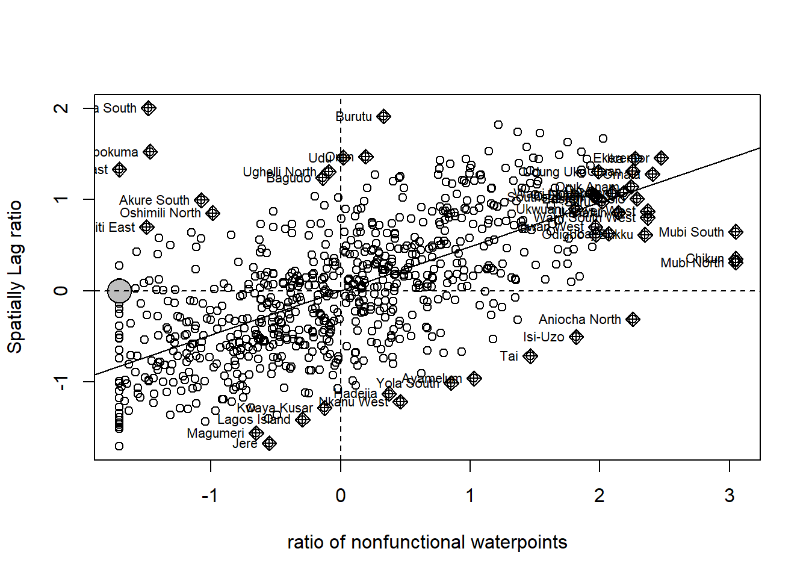
Preparing LISA map
quadrant <- vector(mode="numeric",length=nrow(localMI))
nga_wp$"lag Nonfunctional" <- lag.listw(rswm_q, nga_wp$"pct_nonfunctional")
DV <- nga_wp$"lag Nonfunctional" - mean(nga_wp$"lag Nonfunctional")
LM_I <- localMI[,1] - mean(localMI[,1])
signif <- 0.05
quadrant[DV <0 & LM_I>0] <- 1
quadrant[DV >0 & LM_I<0] <- 2
quadrant[DV <0 & LM_I<0] <- 3
quadrant[DV >0 & LM_I>0] <- 4
quadrant[localMI[,5]>signif] <- 0LISA Map
LISA maps are good for visualising spatial correlation. IT allows us to know the area or clusters we should pay attention to or where there is significance. Second, it establishes a proportional relationship between the sum of the local statistics and a corresponding global statistic. For the top right of the map, it should be ignored as the values were changed from NA to 0, resulting in a huge low-low region
nga_wp.localMI$quadrant <- quadrant
colors <- c("#ffffff", "#2c7bb6", "#abd9e9", "#fdae61", "#d7191c")
clusters <- c("insignificant", "low-low", "low-high", "high-low", "high-high")
LISAmap <- tm_shape(nga_wp.localMI) +
tm_fill(col = "quadrant",
style = "cat",
palette = colors[c(sort(unique(quadrant)))+1],
labels = clusters[c(sort(unique(quadrant)))+1],
popup.vars = c("")) +
tm_view(set.zoom.limits = c(11,17)) +
tm_borders(alpha=0.5) +
tm_layout(main.title = "Local Indicator of Spatial Association",
legend.height = 0.25,
main.title.size = 0.8,legend.width = 0.35)
tmap_arrange(local_moran, LISAmap,
asp=1, ncol=2)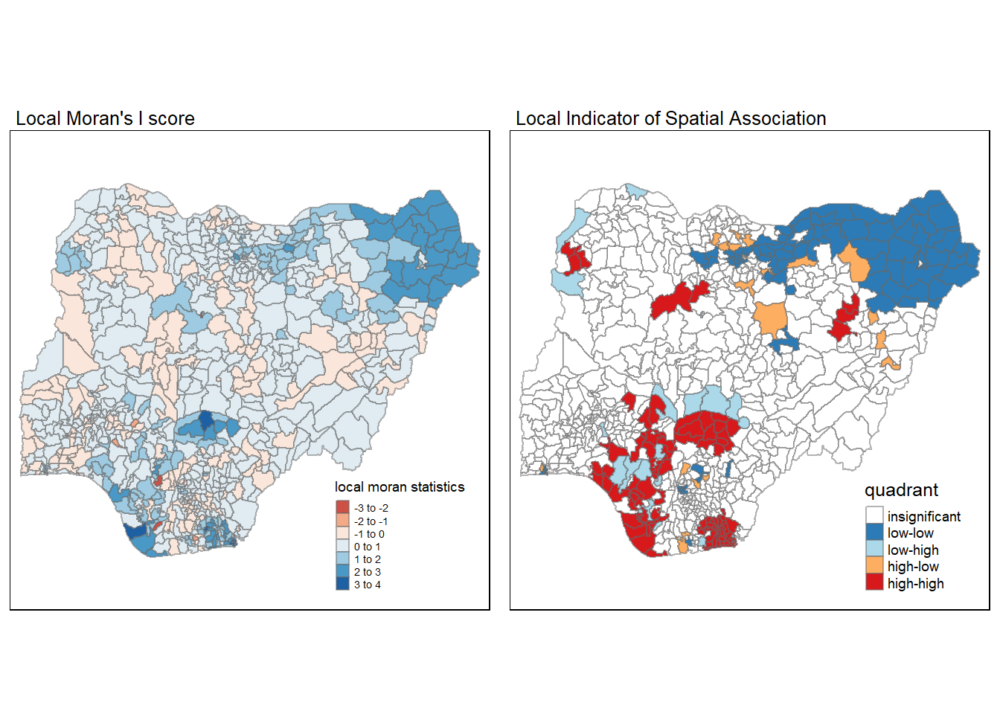
Based on the LISA map above and the map of Nigera region below, we can see there could be some interesting points where the high-high region(mostly clustered at bottom left) where waterpoints are most non-function are low lying or coastal regions. This could potentially mean that the waterpoints might lack maintenance or usage as the population there relies on other water sources but more investigation would be required to prove that this correlation does mean causation.
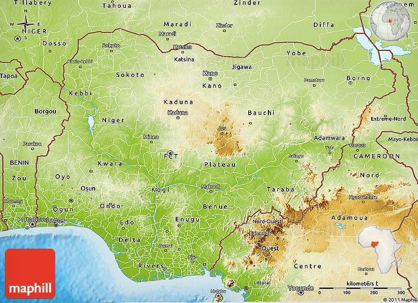
Hot spot and cold spot analysis
First we determine the cutoff distance based on the coordinates. The statistics below show that the largest first neighbour distance is approximately 71.661 units.
k1 <- knn2nb(knearneigh(coords))
k1dists <- unlist(nbdists(k1, coords, longlat = TRUE))
summary(k1dists) Min. 1st Qu. Median Mean 3rd Qu. Max.
2.662 12.815 20.242 22.031 27.706 71.661 we then convert the nb object into spatial weights object and also take a look at the statistics of the neighbour list
wm_d62 <- dnearneigh(coords, 0, 62, longlat = TRUE)
wm_d62Neighbour list object:
Number of regions: 774
Number of nonzero links: 13830
Percentage nonzero weights: 2.308555
Average number of links: 17.86822
6 regions with no links:
93 112 123 236 452 670wm62_lw <- nb2listw(wm_d62, style = 'B')
summary(wm62_lw)Characteristics of weights list object:
Neighbour list object:
Number of regions: 774
Number of nonzero links: 13830
Percentage nonzero weights: 2.308555
Average number of links: 17.86822
6 regions with no links:
93 112 123 236 452 670
Link number distribution:
0 1 2 3 4 5 6 7 8 9 10 11 12 13 14 15 16 17 18 19 20 21 22 23 24 25
6 12 16 33 38 47 47 44 26 38 20 21 17 28 19 17 29 10 6 14 5 11 5 18 11 15
26 27 28 29 30 31 32 33 34 35 36 37 38 39 40 41 42 43 44 45 46 47 48 49 50 51
16 12 15 13 16 11 7 9 9 11 3 9 6 7 8 4 4 6 2 6 6 5 5 8 3 2
52 53 54 55 56 57
5 5 5 1 1 1
12 least connected regions:
3 90 91 163 237 271 402 494 507 649 708 710 with 1 link
1 most connected region:
619 with 57 links
Weights style: B
Weights constants summary:
n nn S0 S1 S2
B 768 589824 13830 27660 1591400knn <- knn2nb(knearneigh(coords, k=12))
knnNeighbour list object:
Number of regions: 774
Number of nonzero links: 9288
Percentage nonzero weights: 1.550388
Average number of links: 12
Non-symmetric neighbours listknn_lw <- nb2listw(knn, style = 'B')
summary(knn_lw)Characteristics of weights list object:
Neighbour list object:
Number of regions: 774
Number of nonzero links: 9288
Percentage nonzero weights: 1.550388
Average number of links: 12
Non-symmetric neighbours list
Link number distribution:
12
774
774 least connected regions:
1 2 3 4 5 6 7 8 9 10 11 12 13 14 15 16 17 18 19 20 21 22 23 24 25 26 27 28 29 30 31 32 33 34 35 36 37 38 39 40 41 42 43 44 45 46 47 48 49 50 51 52 53 54 55 56 57 58 59 60 61 62 63 64 65 66 67 68 69 70 71 72 73 74 75 76 77 78 79 80 81 82 83 84 85 86 87 88 89 90 91 92 93 94 95 96 97 98 99 100 101 102 103 104 105 106 107 108 109 110 111 112 113 114 115 116 117 118 119 120 121 122 123 124 125 126 127 128 129 130 131 132 133 134 135 136 137 138 139 140 141 142 143 144 145 146 147 148 149 150 151 152 153 154 155 156 157 158 159 160 161 162 163 164 165 166 167 168 169 170 171 172 173 174 175 176 177 178 179 180 181 182 183 184 185 186 187 188 189 190 191 192 193 194 195 196 197 198 199 200 201 202 203 204 205 206 207 208 209 210 211 212 213 214 215 216 217 218 219 220 221 222 223 224 225 226 227 228 229 230 231 232 233 234 235 236 237 238 239 240 241 242 243 244 245 246 247 248 249 250 251 252 253 254 255 256 257 258 259 260 261 262 263 264 265 266 267 268 269 270 271 272 273 274 275 276 277 278 279 280 281 282 283 284 285 286 287 288 289 290 291 292 293 294 295 296 297 298 299 300 301 302 303 304 305 306 307 308 309 310 311 312 313 314 315 316 317 318 319 320 321 322 323 324 325 326 327 328 329 330 331 332 333 334 335 336 337 338 339 340 341 342 343 344 345 346 347 348 349 350 351 352 353 354 355 356 357 358 359 360 361 362 363 364 365 366 367 368 369 370 371 372 373 374 375 376 377 378 379 380 381 382 383 384 385 386 387 388 389 390 391 392 393 394 395 396 397 398 399 400 401 402 403 404 405 406 407 408 409 410 411 412 413 414 415 416 417 418 419 420 421 422 423 424 425 426 427 428 429 430 431 432 433 434 435 436 437 438 439 440 441 442 443 444 445 446 447 448 449 450 451 452 453 454 455 456 457 458 459 460 461 462 463 464 465 466 467 468 469 470 471 472 473 474 475 476 477 478 479 480 481 482 483 484 485 486 487 488 489 490 491 492 493 494 495 496 497 498 499 500 501 502 503 504 505 506 507 508 509 510 511 512 513 514 515 516 517 518 519 520 521 522 523 524 525 526 527 528 529 530 531 532 533 534 535 536 537 538 539 540 541 542 543 544 545 546 547 548 549 550 551 552 553 554 555 556 557 558 559 560 561 562 563 564 565 566 567 568 569 570 571 572 573 574 575 576 577 578 579 580 581 582 583 584 585 586 587 588 589 590 591 592 593 594 595 596 597 598 599 600 601 602 603 604 605 606 607 608 609 610 611 612 613 614 615 616 617 618 619 620 621 622 623 624 625 626 627 628 629 630 631 632 633 634 635 636 637 638 639 640 641 642 643 644 645 646 647 648 649 650 651 652 653 654 655 656 657 658 659 660 661 662 663 664 665 666 667 668 669 670 671 672 673 674 675 676 677 678 679 680 681 682 683 684 685 686 687 688 689 690 691 692 693 694 695 696 697 698 699 700 701 702 703 704 705 706 707 708 709 710 711 712 713 714 715 716 717 718 719 720 721 722 723 724 725 726 727 728 729 730 731 732 733 734 735 736 737 738 739 740 741 742 743 744 745 746 747 748 749 750 751 752 753 754 755 756 757 758 759 760 761 762 763 764 765 766 767 768 769 770 771 772 773 774 with 12 links
774 most connected regions:
1 2 3 4 5 6 7 8 9 10 11 12 13 14 15 16 17 18 19 20 21 22 23 24 25 26 27 28 29 30 31 32 33 34 35 36 37 38 39 40 41 42 43 44 45 46 47 48 49 50 51 52 53 54 55 56 57 58 59 60 61 62 63 64 65 66 67 68 69 70 71 72 73 74 75 76 77 78 79 80 81 82 83 84 85 86 87 88 89 90 91 92 93 94 95 96 97 98 99 100 101 102 103 104 105 106 107 108 109 110 111 112 113 114 115 116 117 118 119 120 121 122 123 124 125 126 127 128 129 130 131 132 133 134 135 136 137 138 139 140 141 142 143 144 145 146 147 148 149 150 151 152 153 154 155 156 157 158 159 160 161 162 163 164 165 166 167 168 169 170 171 172 173 174 175 176 177 178 179 180 181 182 183 184 185 186 187 188 189 190 191 192 193 194 195 196 197 198 199 200 201 202 203 204 205 206 207 208 209 210 211 212 213 214 215 216 217 218 219 220 221 222 223 224 225 226 227 228 229 230 231 232 233 234 235 236 237 238 239 240 241 242 243 244 245 246 247 248 249 250 251 252 253 254 255 256 257 258 259 260 261 262 263 264 265 266 267 268 269 270 271 272 273 274 275 276 277 278 279 280 281 282 283 284 285 286 287 288 289 290 291 292 293 294 295 296 297 298 299 300 301 302 303 304 305 306 307 308 309 310 311 312 313 314 315 316 317 318 319 320 321 322 323 324 325 326 327 328 329 330 331 332 333 334 335 336 337 338 339 340 341 342 343 344 345 346 347 348 349 350 351 352 353 354 355 356 357 358 359 360 361 362 363 364 365 366 367 368 369 370 371 372 373 374 375 376 377 378 379 380 381 382 383 384 385 386 387 388 389 390 391 392 393 394 395 396 397 398 399 400 401 402 403 404 405 406 407 408 409 410 411 412 413 414 415 416 417 418 419 420 421 422 423 424 425 426 427 428 429 430 431 432 433 434 435 436 437 438 439 440 441 442 443 444 445 446 447 448 449 450 451 452 453 454 455 456 457 458 459 460 461 462 463 464 465 466 467 468 469 470 471 472 473 474 475 476 477 478 479 480 481 482 483 484 485 486 487 488 489 490 491 492 493 494 495 496 497 498 499 500 501 502 503 504 505 506 507 508 509 510 511 512 513 514 515 516 517 518 519 520 521 522 523 524 525 526 527 528 529 530 531 532 533 534 535 536 537 538 539 540 541 542 543 544 545 546 547 548 549 550 551 552 553 554 555 556 557 558 559 560 561 562 563 564 565 566 567 568 569 570 571 572 573 574 575 576 577 578 579 580 581 582 583 584 585 586 587 588 589 590 591 592 593 594 595 596 597 598 599 600 601 602 603 604 605 606 607 608 609 610 611 612 613 614 615 616 617 618 619 620 621 622 623 624 625 626 627 628 629 630 631 632 633 634 635 636 637 638 639 640 641 642 643 644 645 646 647 648 649 650 651 652 653 654 655 656 657 658 659 660 661 662 663 664 665 666 667 668 669 670 671 672 673 674 675 676 677 678 679 680 681 682 683 684 685 686 687 688 689 690 691 692 693 694 695 696 697 698 699 700 701 702 703 704 705 706 707 708 709 710 711 712 713 714 715 716 717 718 719 720 721 722 723 724 725 726 727 728 729 730 731 732 733 734 735 736 737 738 739 740 741 742 743 744 745 746 747 748 749 750 751 752 753 754 755 756 757 758 759 760 761 762 763 764 765 766 767 768 769 770 771 772 773 774 with 12 links
Weights style: B
Weights constants summary:
n nn S0 S1 S2
B 774 599076 9288 16750 453344gi.fixed <- localG(nga_wp$"pct_nonfunctional", wm62_lw)
nga_wp.gi <- cbind(nga_wp, as.matrix(gi.fixed)) %>%
rename(gstat_fixed = as.matrix.gi.fixed.)We can see from the heatmap that most of the hot spots are clusters at the bottom left of the map while the cold spots are at the top centre of the map
map_nonfunctional <- tm_shape(nga_wp) +
tm_fill("pct_nonfunctional",
n = 5,
style = "bclust") +
tm_borders(alpha = 0.5) +
tm_layout(main.title = "Ratio of functional water points",main.title.size = 1,legend.height = 0.25,
legend.width = 0.35)
Gimap <-tm_shape(nga_wp.gi) +
tm_fill(col = "gstat_fixed",
style = "pretty",
palette="-RdBu",
title = "local Gi") +
tm_borders(alpha = 0.5)+
tm_layout(main.title = "local Gi of non-functional water points",
main.title.size =1,legend.height = 0.25,
legend.width = 0.35)
tmap_arrange(map_nonfunctional, Gimap, asp=1, ncol=2)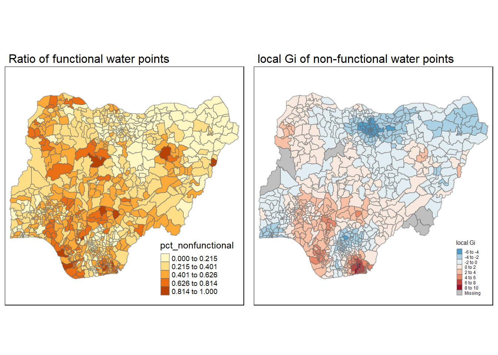
Committee Member: 1(1) 2(1) 3(1) 4(1) 5(1) 6(1) 7(1) 8(1) 9(1) 10(1)
Computing Hierarchical ClusteringAdaptive distance Gi
gi.adaptive <- localG(nga_wp$"pct_nonfunctional",knn_lw)
nga_wp.gi <- cbind(nga_wp, as.matrix(gi.adaptive)) %>%
rename(gstat_adaptive = as.matrix.gi.adaptive.)Gimap <- tm_shape(nga_wp.gi ) +
tm_fill(col = "gstat_adaptive",
style = "pretty",
palette="-RdBu",
title = "local Gi") +
tm_borders(alpha = 0.5)+
tm_layout(main.title = "adaptive local Gi of non-functional water points",
main.title.size =1,legend.height = 0.25,
legend.width = 0.35)
tmap_arrange(map_nonfunctional,
Gimap,
asp=1,
ncol=2)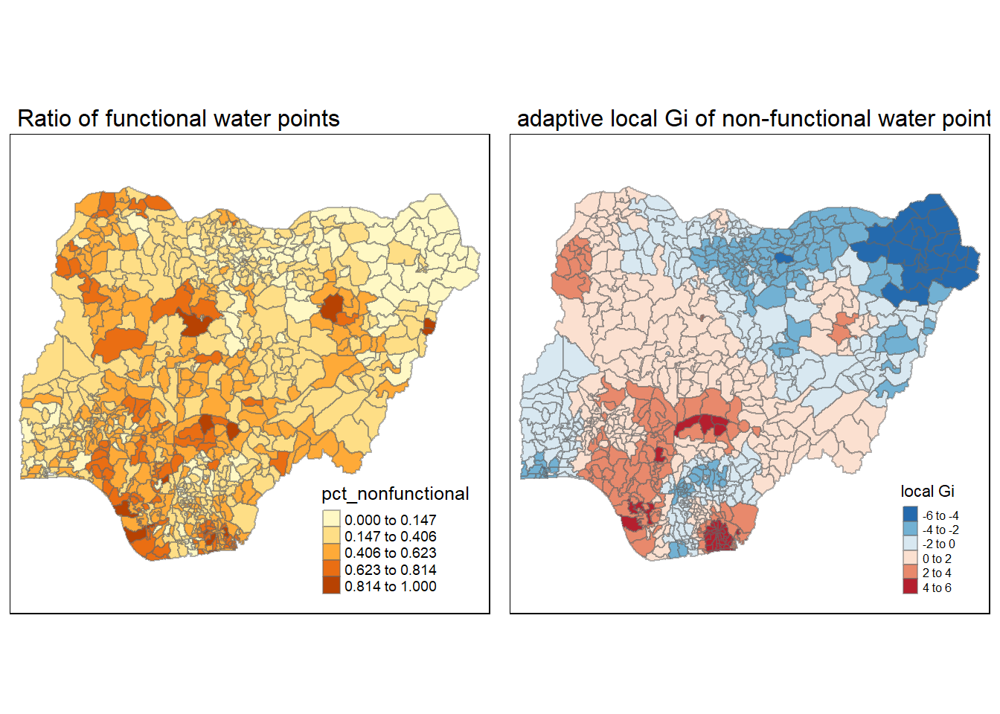
Committee Member: 1(1) 2(1) 3(1) 4(1) 5(1) 6(1) 7(1) 8(1) 9(1) 10(1)
Computing Hierarchical ClusteringAs usual we see that the hot spots are more towards the bottom region that are coastal areas, if we compare with the rainfall map below, there seems to be some correlation between the rainfall and the clusters. Based on this observation there is some correlation where cold spots are areas with lower rainfall (especially for northern regions). This means there is indeed a possibility that due to lack of other forms of water resource, the waterpoints are more well maintained as they are a valuable resource in these areas. This remains a conjecture till more studies are done.
Non-functional hand pumps Analysis
As hand pump water point makes up roughly 70% of all water points, it could be worthwhile to look at the hot spots and cold spots (especially since its concentration of non-functional water points differ from general population).
gi.adaptivehand <- localG(nga_wp$"wpt non-functional hand pump",knn_lw)
nga_wp.gi_hand <- cbind(nga_wp, as.matrix(gi.adaptivehand)) %>%
rename(gstat_adaptivehand = as.matrix.gi.adaptivehand.)From the plots below, we can see that most hand pumps are non functional in the middle strip/section of the map. It is perhaps interesting to note that the hottest spot very likely coincides with the capital city, kaduna. Another small correlation found is by comparing with the rainfall map above. It seems that most hand pump hot spots are near regions classified as G_Savanna or Guinea Savannah. Could it be that more of these areas are savanna areas with lower human population or more animals that results in less maintenance of the waterpoints?
map_nonfunctionalhand <- tm_shape(nga_wp) +
tm_fill("wpt non-functional hand pump",
n = 5,
style = "bclust") +
tm_borders(alpha = 0.5) +
tm_layout(main.title = "non-functional hand pumps",
main.title.size =1,legend.height = 0.25, legend.width = 0.35)
Gimap <- tm_shape(nga_wp.gi_hand) +
tm_fill(col = "gstat_adaptivehand",
style = "pretty",
palette="-RdBu",
title = "local Gi") +
tm_borders(alpha = 0.5)+
tm_layout(main.title = "local Gi of non-functional hand pumps",
main.title.size =1,legend.height = 0.25, legend.width = 0.35)
tmap_arrange(map_nonfunctionalhand,
Gimap,
asp=1,
ncol=2)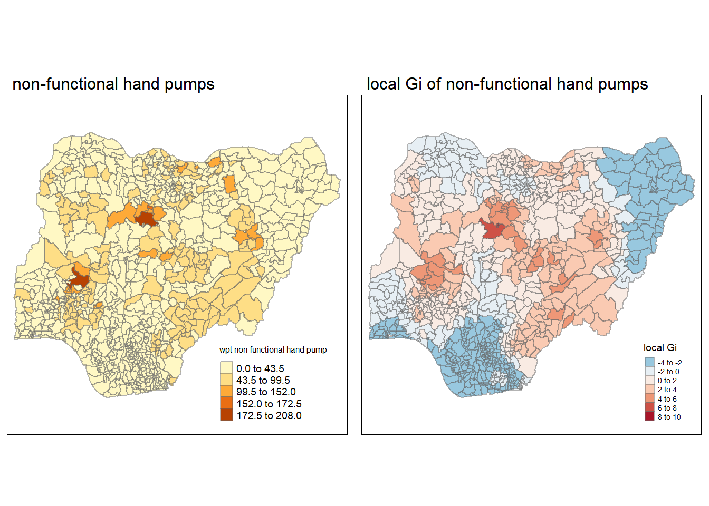
Committee Member: 1(1) 2(1) 3(1) 4(1) 5(1) 6(1) 7(1) 8(1) 9(1) 10(1)
Computing Hierarchical ClusteringConclusion
Based on the various analysis and visualisation, we can quite safely say that there seems to be spatial auto-correlation in the various regions of Nigeria. There are clusters where less non-functional water points which are surround by neighbours with the similar ratio of non-functional water points and vice versa. Though we can draw some correlations based on the rainfall and rough landscape, there remains a lot of work to be done in order to draw a convincing conclusion. Such work could range from studying more types of data like how the water points became non functional and perhaps even going down to get surveys of people actually in charge of maintenance. To conclude, this is definitely a worthy cause to deep dive into and gather further insights.
Credits
Prof Kam (for providing various tips and data wrangling codes
whatsapp group (very helpful community!)